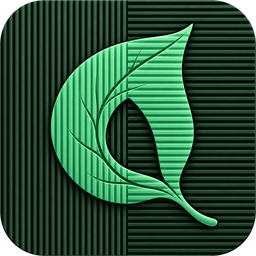

这是一份可以随意涂写的示例文档。每一页介绍一类功能，并留出了可以直接动手的位置：高亮、签名、搜索、识别扫描件……所有操作都在本机完成，不联网、不上传。
点击工具栏的“搜索”或按 Ctrl+F，结果会列出每一处命中的前后文，点击即可定位。支持区分大小写与全词匹配。
“大纲”打开统一的导航侧栏：左边这份文档的目录就来自每一章的标题。你也可以添加阅读书签、查看页面缩略图、浏览所有批注。
页码、缩放和视图设置按文件记忆；下次打开同一个 PDF 时会回到上次的位置。This sample is a reader-friendly tour of Qingye PDF.
点击工具栏“批注”选择工具。批注保存进 PDF 文件本身，其他阅读器也能看到；在保存之前随时可以撤销。
| 工具 | 用法 |
|---|---|
| 高亮 | 拖选文字即可高亮，可更换颜色。 |
| 自由绘制 | 用鼠标或触控笔直接画，适合圈重点。 |
| 文本框 | 在任意位置输入文字说明。 |
| 插入图片 | 把图片放到页面上，可拖动与缩放。 |
| 手写签名 | 绘制或输入签名，保存后可重复使用（可视签名，不是证书数字签名）。 |
| 评论 | 给某处内容留下批注意见，可在“大纲 → 批注”中统一查看和导出。 |
好的笔记不是把书抄一遍，而是留下你自己的思考。
“页面编辑”可以直接在页面上添加文字、印章与图形，拖动摆放，预览无误后再应用。“工具箱”提供更完整的本地处理，每个操作都可以撤销，保存才会写入文件；也可以“处理并导出副本”，不改动原文件。
同时打开两个 PDF，在工具箱中选择并排比较，可以同步翻页、设置页差对齐。
扫描件和手机拍的文档，本质上是一张张图片：看起来有字，但无法选中、复制，也搜不到。青页可以在本机识别中英文，给图片叠加一层透明文字，让它变得和普通 PDF 一样好用。
“工具箱 → 处理”还提供扫描件纠偏、浅色背景清理、灰度与图像锐化，适合在识别前先处理模糊或歪斜的页面。
识别只处理你正在使用的页面，不会重新压缩原图。准确率取决于扫描质量，重要内容请复核。
| 快捷键 | 作用 |
|---|---|
| Ctrl+O | 打开 PDF 或 Markdown |
| Ctrl+N | 新建 Markdown |
| Ctrl+S / Ctrl+Shift+S | 保存 / 另存为 |
| Ctrl+Z / Ctrl+Y | 撤销 / 重做（批注与文档操作） |
| Ctrl+F | 全文搜索 |
| Ctrl+G | 跳转页码 |
| Ctrl+Tab / Ctrl+W | 切换 / 关闭标签 |
| F11 | 全屏 |
青页没有账号、会员和广告，也不会联网上传文档。编辑期间会在本机定期保存草稿；如果程序意外关闭，下次启动时首页会提示恢复。
回到首页选择“新建 Markdown”，或打开首页右侧的 Markdown 示例：所见即所得编辑、阅读模式、源码模式、公式、图表与多种导出格式。
青页 PDF 按 AGPL-3.0 开源。本示例文档使用 Noto Sans CJK 字体（SIL Open Font License 1.1）。